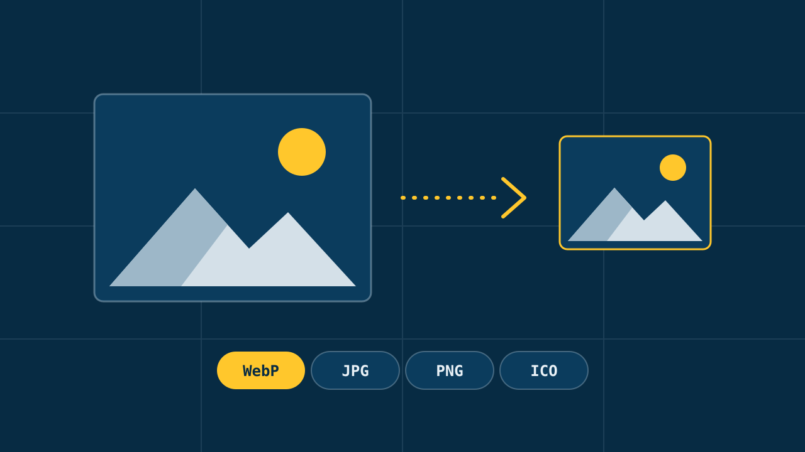

Todos los proyectos
Conversor de imágenes
Una herramienta web para convertir y comprimir imágenes sin subirlas a ningún servidor. Todo el trabajo se hace en el navegador, así que las fotos no salen del dispositivo.

Qué hace
- Convierte varias imágenes a la vez a WebP, JPG, PNG o ICO.
- Comprime y redimensiona: calidad ajustable y tamaño por ancho, alto, encaje o porcentaje, sin deformar la imagen.
- Fondo transparente o de un color, y opción de volver transparente un color de la imagen.
- Antes y después con el peso, las medidas y el ahorro, y un comparador con deslizador.
- Descarga de cada imagen o de todas juntas en un ZIP.
Cómo funciona
Cada imagen se pinta en un canvas del tamaño final y el propio navegador la devuelve en el formato elegido. Las imágenes se convierten de una en una para no llenar la memoria.
El formato ICO no lo sabe crear el navegador, así que escribo a mano la cabecera del archivo y meto dentro un PNG.
Está hecha con HTML, CSS y JavaScript sin frameworks. Se maneja entera con el teclado y tiene tema claro y oscuro.
Lo que aprendí
- Trabajar con archivos en el navegador:
File,Blobycanvas, liberando la memoria que ya no se usa. - Leer y cambiar los píxeles de una imagen uno a uno para quitar un color.
- Pensar en lo que puede fallar: archivos que no son imágenes, formatos que el navegador no abre, imágenes enormes y campos vacíos.
Domótica